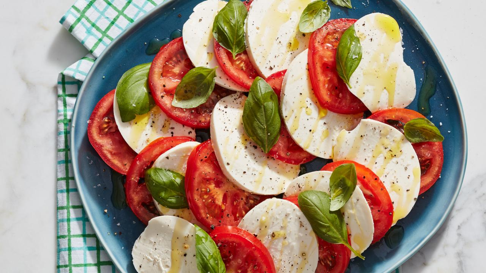

Caprese Recipe!
Caprese salad is a simple Italian salad, made of sliced fresh mozzarella, tomatoes, and sweet basil, seasoned with salt, and olive oil. It is usually arranged on a plate in restaurant practice. Like pizza Margherita, it features the colours of the Italian flag: green, white, and red.
Ingredients
- 3 vine-ripe tomatoes, 1/4-inch thick slices
- 1 pound fresh mozzarella, 1/4-inch thick slices
- 20 to 30 leaves (about 1 bunch) fresh basil
- Extra-virgin olive oil, for drizzling
- Coarse salt and pepper
Steps
- Layer alternating slices of tomatoes and mozzarella, adding a basil leaf between each, on a large, shallow platter.
- Drizzle the salad with extra-virgin olive oil and season with salt and pepper, to taste.